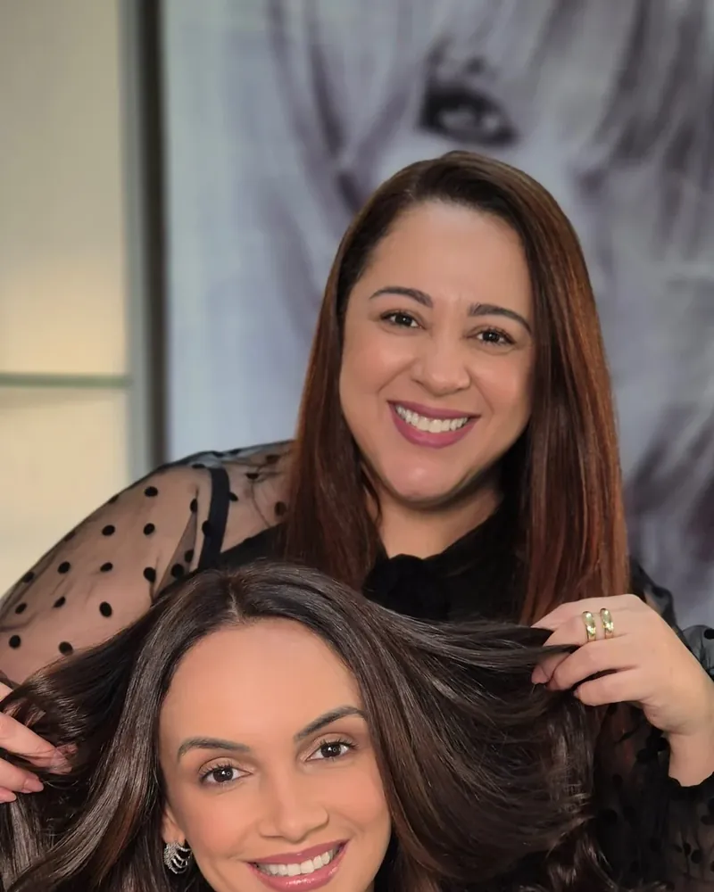
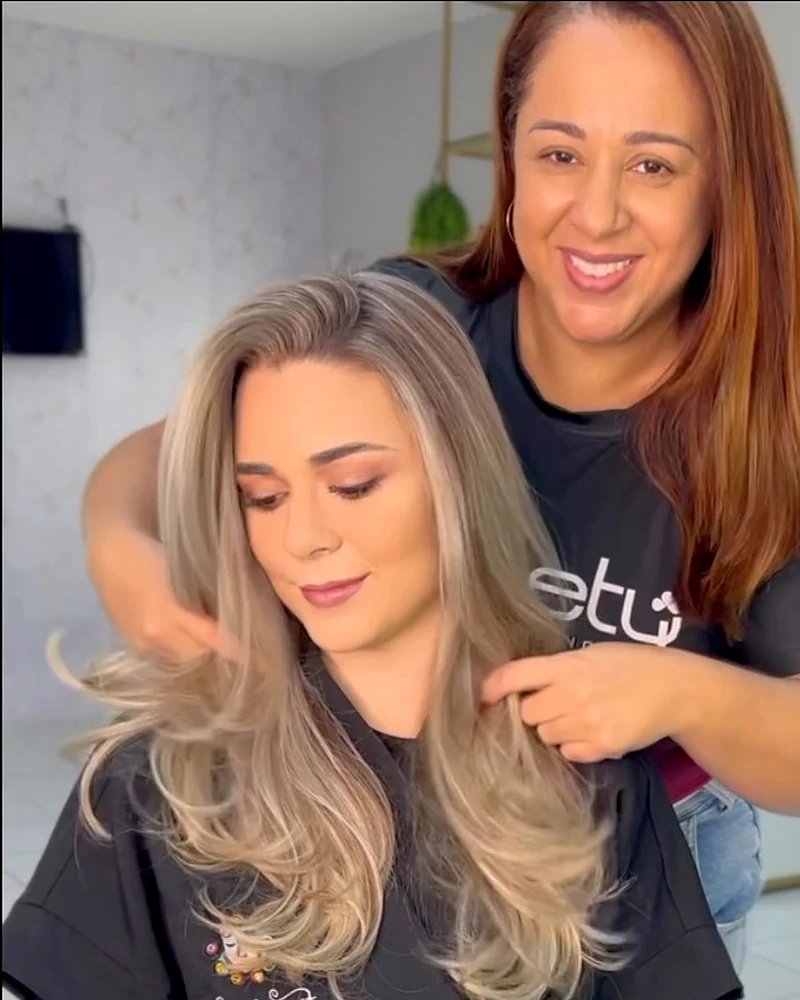
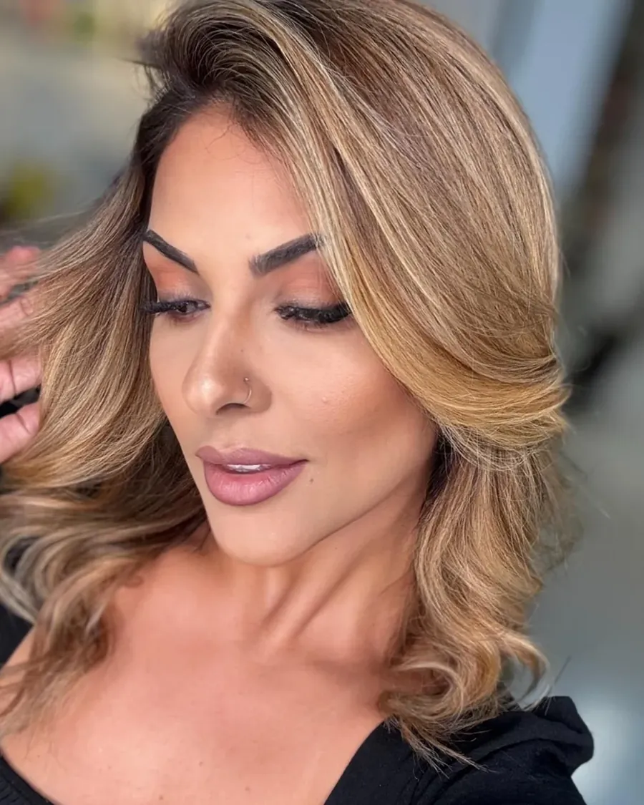
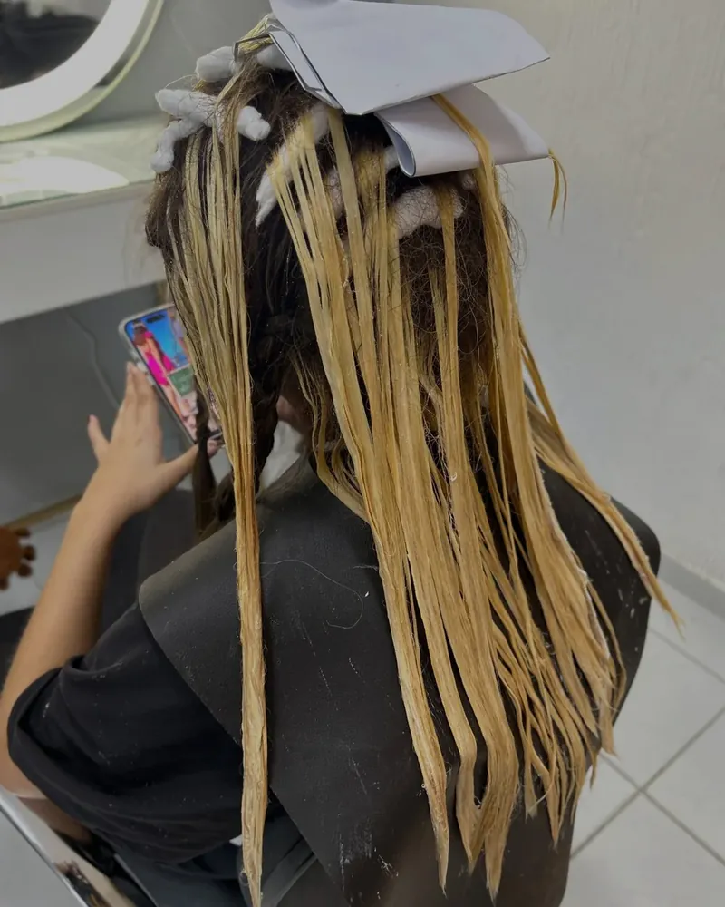
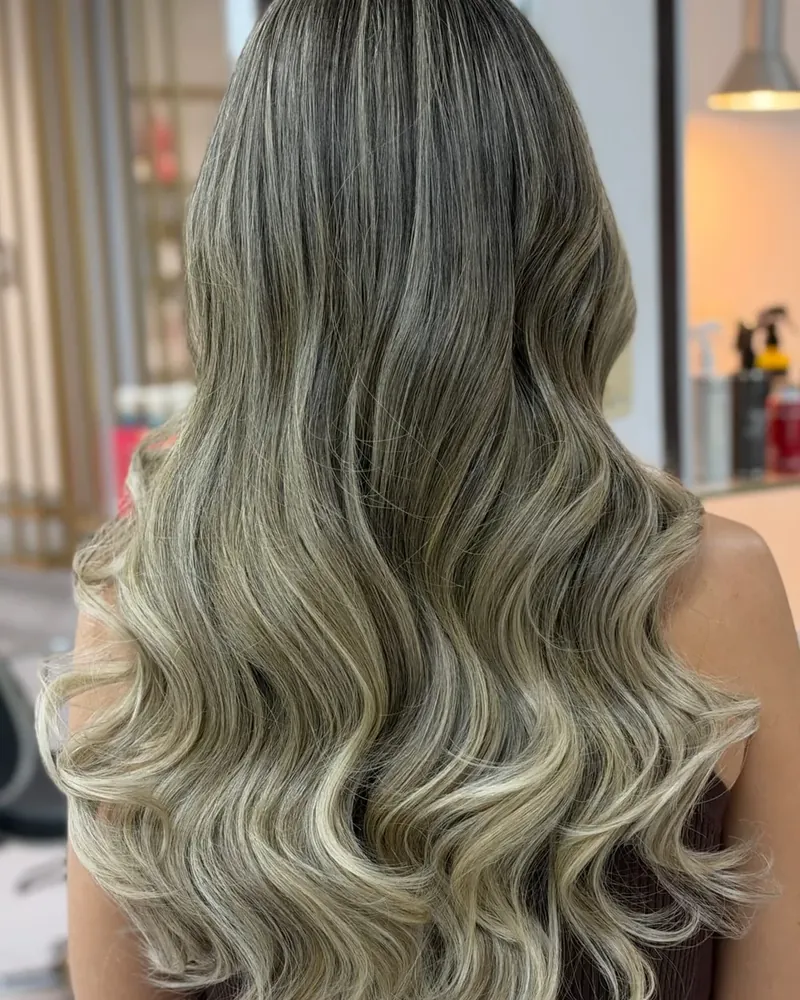
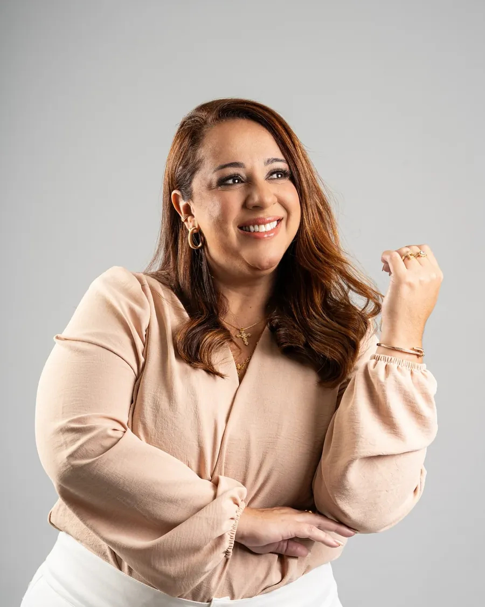
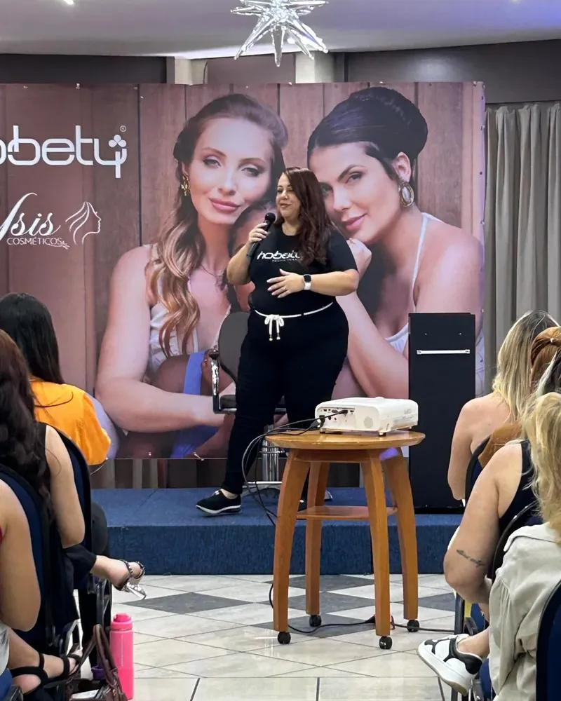
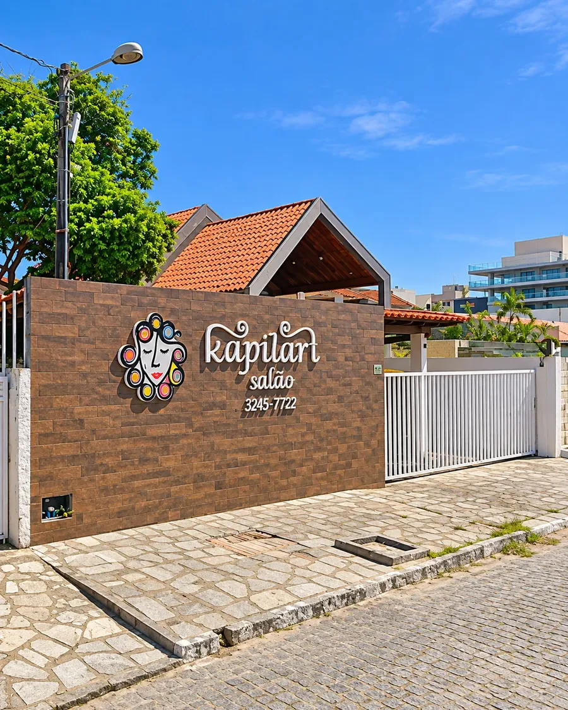

Kapilart Salão • João Pessoa
Sua beleza em uma nova dimensão.
Há mais de 18 anos transformando cabelos e elevando a autoestima. Especialistas em loiros, tratamentos e experiências de beleza personalizadas.
- 18 anosde história
- Expertem loiros
- Excelênciaem cuidado capilar
O Salão
Beleza é uma arte. Conhecimento é o que a torna extraordinária.
Há mais de 18 anos, o Kapilart Salão constrói uma história dedicada à beleza, à autoestima e à excelência profissional.


Somos especializados em loiros, correção de cor, cortes personalizados e tratamentos capilares. Cada atendimento começa com uma análise cuidadosa, respeitando as características, necessidades e desejos de cada cliente.
Aqui, técnica e sensibilidade caminham juntas para entregar resultados que valorizam sua beleza natural.
Técnica, sensibilidade e cuidado em cada fio.Jardim Oceania • João Pessoa

Especialidade em loiros
Loiros que impressionam. Resultados que respeitam você.
Cada loiro tem sua personalidade. Trabalhamos com técnicas de mechas, iluminação e correção de cor para alcançar resultados sofisticados, personalizados e harmoniosos.
Tudo começa com uma avaliação profissional, considerando a estrutura, a saúde e o histórico químico dos fios.
- i.
Mechas & luzes
Morena iluminada, babylights e contornos sob medida.
- ii.
Iluminação
Pontos de luz que valorizam o rosto e o movimento.
- iii.
Correção de cor
Do amarelado ao tom desejado, com segurança para a fibra.


Transformações em movimento
Do diagnóstico ao brilho final.
Acompanhe de perto o que acontece na cadeira da Kapilart: técnica precisa, produtos profissionais e um olhar atento para cada detalhe da cor.
Serviços
Um universo de possibilidades para sua beleza.
Da cor ao tratamento, do corte à finalização para eventos. Escolha um serviço e agende sua avaliação.
Fundadora
Amanda Luna. Experiência, conhecimento e paixão pela beleza.
À frente do Kapilart Salão, Amanda Luna reúne 23 anos de experiência na área da beleza, construindo uma trajetória marcada pela dedicação, aperfeiçoamento e paixão por transformar cabelos.

Especialista em mechas, colorista e tricologista, Amanda acredita que um resultado extraordinário começa com conhecimento e uma avaliação individualizada.
- Expert em mechas
- Colorista e tricologista
- Designer de cortes
- Educadora Hobety
- Maquiadora
- Penteadista
“Cada cabelo conta uma história. Nosso trabalho é revelar sua melhor versão.”Amanda Luna

Educadora Hobety
Quem ensina domina a técnica.
Além do salão, Amanda forma outros profissionais como educadora oficial Hobety, ministrando cursos e workshops sobre mechas, colorimetria e tratamentos. Esse conhecimento, sempre atualizado, chega primeiro às clientes da Kapilart.
- CursosMechas & colorimetria
- WorkshopsTécnicas e produtos
- AtualizaçãoTendências constantes
Marcas profissionais
Excelência também está na escolha dos produtos.
- L'ORÉAL
- Joico
- hobety
- Braé
- Wella
- Olorchê
- ItallianHairtech
Galeria
Resultados que falam por si.
Mechas, loiros, iluminados, cortes e tratamentos realizados no Kapilart. Toque em qualquer imagem para ampliar.
Experiência Kapilart
Seu momento de cuidado começa aqui.
Um ambiente preparado para receber você com atenção, profissionalismo e cuidado em cada etapa.
Do primeiro contato à finalização, nossa prioridade é proporcionar uma experiência que valorize sua beleza e respeite a saúde dos seus cabelos.
- 01
Acolhimento
Recepção atenciosa e um ambiente pensado para você relaxar.
- 02
Avaliação
Análise da estrutura, saúde e histórico químico dos fios.
- 03
Técnica
Execução precisa com produtos das melhores marcas profissionais.
- 04
Finalização
Orientação de cuidados em casa para manter o resultado.
Contato & agendamento
Sua próxima transformação começa com uma conversa.
Agende sua avaliação e descubra as possibilidades para seus cabelos com a equipe Kapilart.
- Telefone(83) 3245-7722
- WhatsApp(83) 99882-2099
- E-mailkapilartsalao1@gmail.com
- Instagram@kapilartsalao
Localização
Venha nos visitar.

Endereço
Rua Coronel Martinho da Mota Silveira, 110
Jardim Oceania, João Pessoa - PB
CEP 58037-212
Horário de funcionamento
- Segunda a sábado
- 09h às 18h
- Domingo
- Fechado